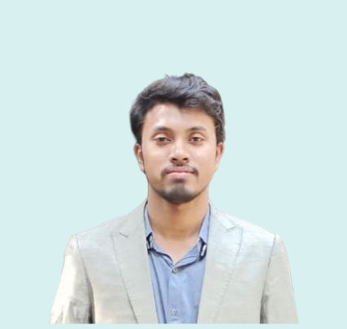
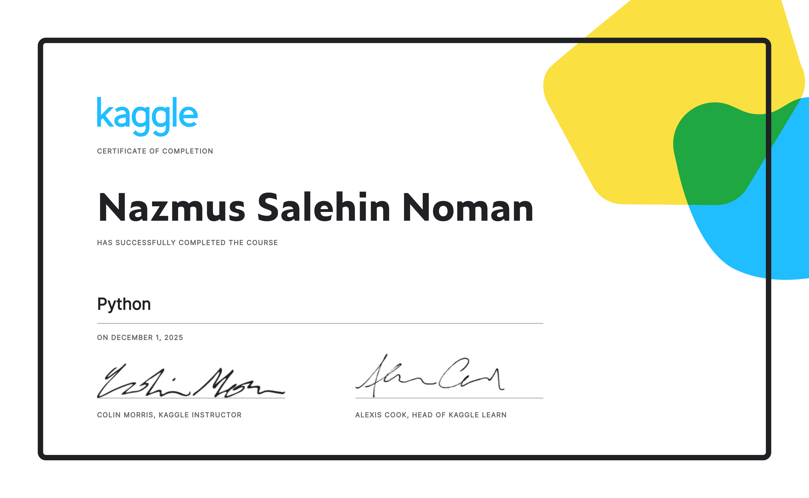
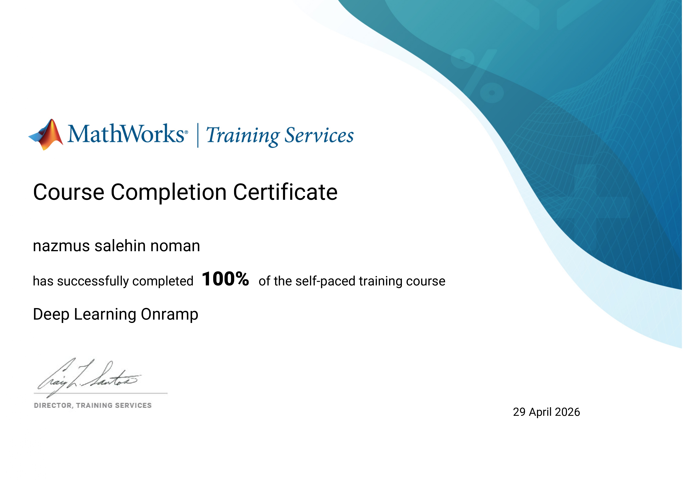
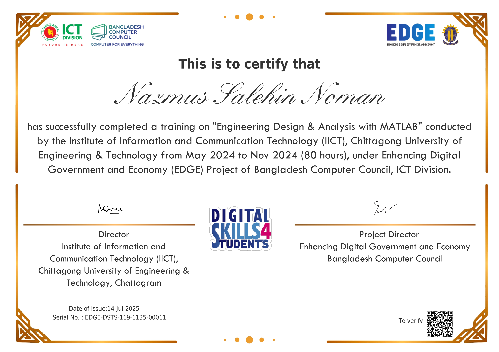

I am Nazmus Salehin Noman, born in Kushtia, Bangladesh. I spent my childhood in my village, where I completed my primary and secondary education. After passing my SSC in 2017 from Khoksa Janipur Pilot Secondary School, I moved to Dhaka, the capital city of Bangladesh, to pursue higher secondary education. I completed my HSC in 2019 from Notre Dame College, Dhaka, one of the country’s leading institutions, in the science group. For my undergraduate studies, I had the opportunity to be selected for several top universities and was privileged to enroll at the Chittagong University of Engineering and Technology (CUET) in the Department of Electrical and Electronic Engineering, where I completed my BSc degree. During my academic journey, I gained valuable industrial experience through attachments at GEMCO in my second year and the Kaptai Hydropower Plant in my fourth year. I also completed an internship at Dhaka Electric Supply Company (DESCO). Additionally, I served as the President of the Greater Kushtia Student Association at CUET, where I developed strong leadership and organizational skills. My thesis focused on biomedical signal processing, and I specialize in signal processing, machine learning, and deep learning. I have worked on several projects and publications in these areas, which are highlighted in the respective sections of my portfolio. Beyond academics, I am passionate about traveling. I have explored many beautiful places across Bangladesh, which has allowed me to experience diverse cultures and understand the lifestyles and struggles of different communities, and I am highly motivated to serve the people through my research and work.



More details available in Projects & Publications section.